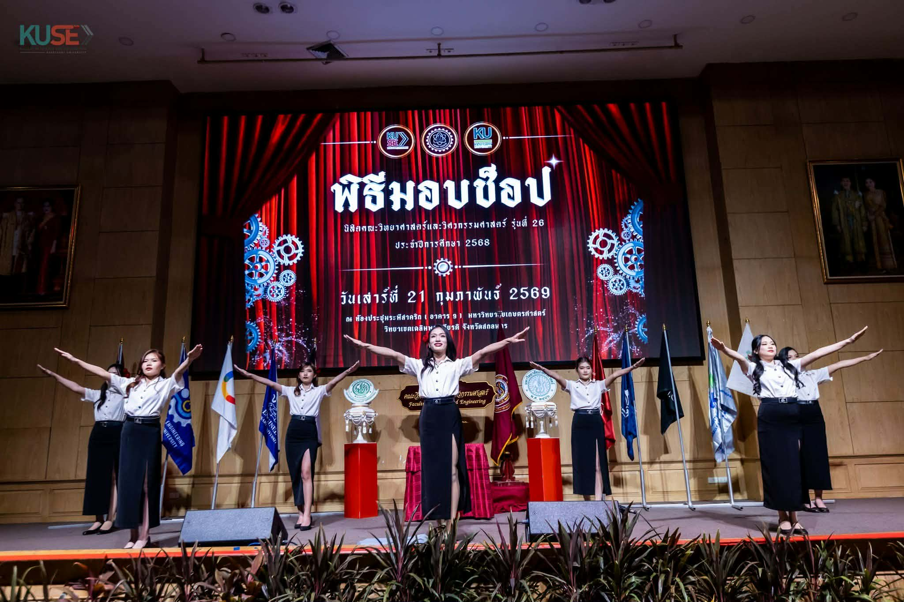
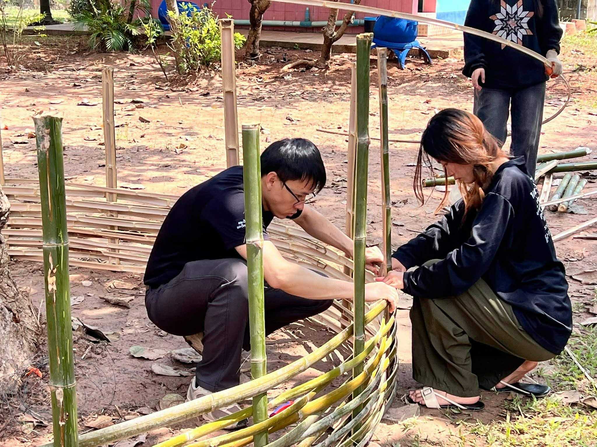

พิธีมอบช็อป ประจำปี การศึกษา 2568
จากนักเรียนสู่การเป็นนิสิตวิทย์&วิศวะ โครงการถอดไท ใส่ช็อป มอบเกียร์ KUSE รุ่นที่ 26

โครงการผู้บริหารพบนิสิต ประจำปีการศึกษา 2568
ช่วงเวลาแห่งการเปิดใจ รับฟัง และแลกเปลี่ยนความคิดเห็น เพื่อร่วมกันพัฒนา “บ้านของเรา” KUSE ให้ดียิ่งขึ้น

ศึกษาดูงาน Power Plant Engineering
ร่วมไปถึงแลกเปลี่ยนประสบการณ์การทำงานในโรงไฟฟ้า เพื่อเตรียมความพร้อมก่อนไปปฏิบัติงานจริงของนิสิต

iEECON 2026 การประชุมวิชาการนานาชาติ
Innovating The Future Of Engineering: Fostering Resilience And Adaptability In Complex Systems

ค่ายอาสาพัฒนาชนบทวิศวกรสิ่งแวดล้อม ประจำปี 2569
จัดขึ้นเพื่อพัฒนาพื้นที่โรงเรียนและชุมชน พร้อมทั้งเสริมสร้างประสบการณ์การเรียนรู้นอกห้องเรียนให้กับนิสิต

ค่ายผู้นำเทคโนโลยี (Tech Leader Camp)
ภาควิชาฯ จัดทำโครงการค่ายผู้นำเทคโนโลยี (Tech Leader Camp) ณ อุทยานแห่งชาติภูพาน จังหวัดสกลนคร
โครงการพัฒนาทักษะสื่อสาร นิสิต KUSE
ปรับปรุงทักษะการสื่อสารและการนำเสนอสำหรับนิสิต เพื่อเตรียมความพร้อมในการทำงาน
ค่ายปฏิบัติงานภาค (Internship Camp)
เตรียมนิสิตสำหรับการปฏิบัติงานจริง พร้อมแลกเปลี่ยนประสบการณ์จากวิศวกรและผู้ประกอบการ
สัมมนาพัฒนาวิศวกรรมแบบยั่งยืน
การสัมมนาเกี่ยวกับการออกแบบและพัฒนาโครงการวิศวกรรมที่เป็นมิตรต่อสิ่งแวดล้อม
ค่ายวิศวกรรมคอมพิวเตอร์สำหรับปีที่ 2
ปรับปรุงทักษะการเขียนโค้ดและการออกแบบระบบสำหรับนิสิตชั้นปีที่ 2
โครงการศึกษาโรงไฟฟ้าพลังงานหมุนเวียน
สำรวจและศึกษาเกี่ยวกับระบบผลิตไฟฟ้าจากพลังงานหมุนเวียนที่ยั่งยืน
วิถีนิสิตใหม่ประจำปี 2568
ช่วยให้นิสิตใหม่ได้รู้จักสภาพแวดล้อม และศรัทธาในวิถีชีวิตของคณะวิทย์-วิศว
ค่ายสมรรถนะผู้นำ (Leadership Camp)
พัฒนาทักษะการเป็นผู้นำและการบริหารจัดการสำหรับนิสิตชั้นปีที่ 3 และ 4
การแข่งขัน Robotics ระดับมหาวิทยาลัย
เปิดโอกาสให้นิสิตแสดงทักษะการออกแบบและสร้างหุ่นยนต์ในการแข่งขัน
สัมมนาเทคโนโลยี AI สำหรับสถาปัตยกรรม
เรียนรู้การใช้งาน Artificial Intelligence ในการออกแบบและวิเคราะห์สถาปัตยกรรม
โครงการจิตอาสา วันใหญ่เคเยส
ร่วมพัฒนาสภาพแวดล้อม และสร้างพลังการเป็นหนึ่งเดียวของคณะอักษรเขม KUSE
ค่ายเครื่องกลสำหรับนิสิตชั้นปีที่ 2
ปฏิบัติงานวิศวกรรมเครื่องกลเบื้องต้นใน ห้องปฏิบัติการ
สัมมนาการเขียนข่าว เพื่อสื่อมวลชน
เรียนรู้ทักษะการเขียนข่าวและการสื่อสารผ่านสื่อต่างๆ
โครงการศึกษาสิ่งแวดล้อม ขับเคลื่อน SDG
สำรวจและศึกษาวิธีการปกป้องสิ่งแวดล้อมตามเป้าหมายพัฒนาที่ยั่งยืน
ค่ายวิศวกรรมไฟฟ้า สำหรับปีที่ 3
บูรณาการงานด้านไฟฟ้าและคอมพิวเตอร์ผ่านโครงการจริง